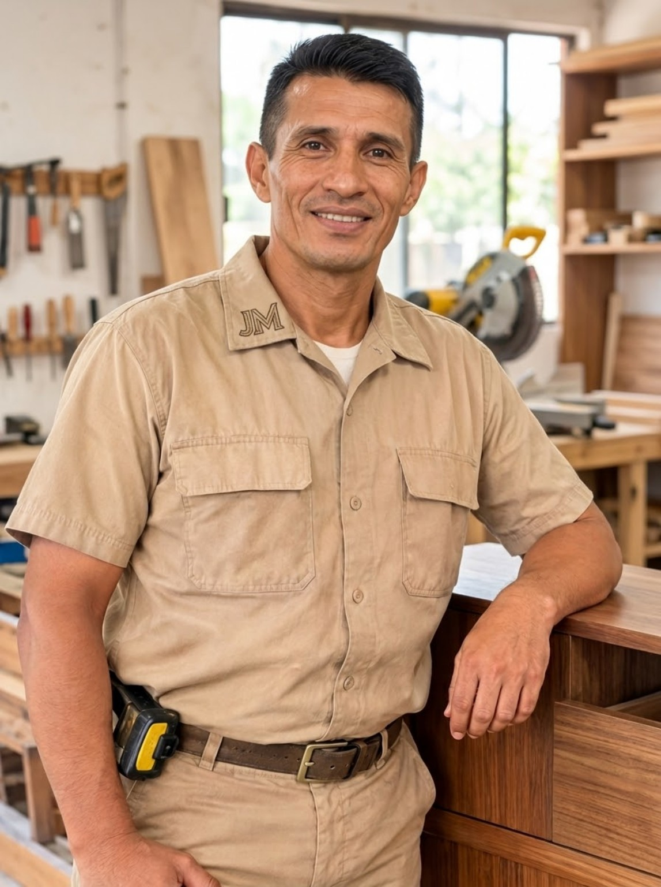
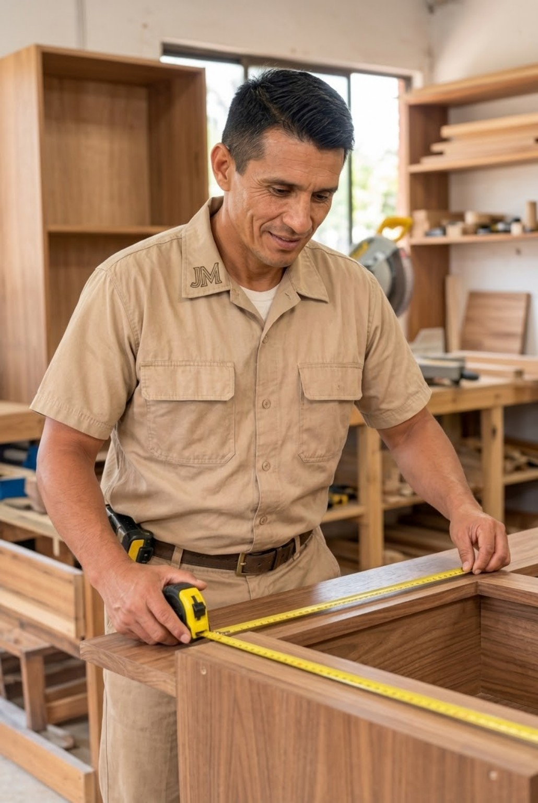
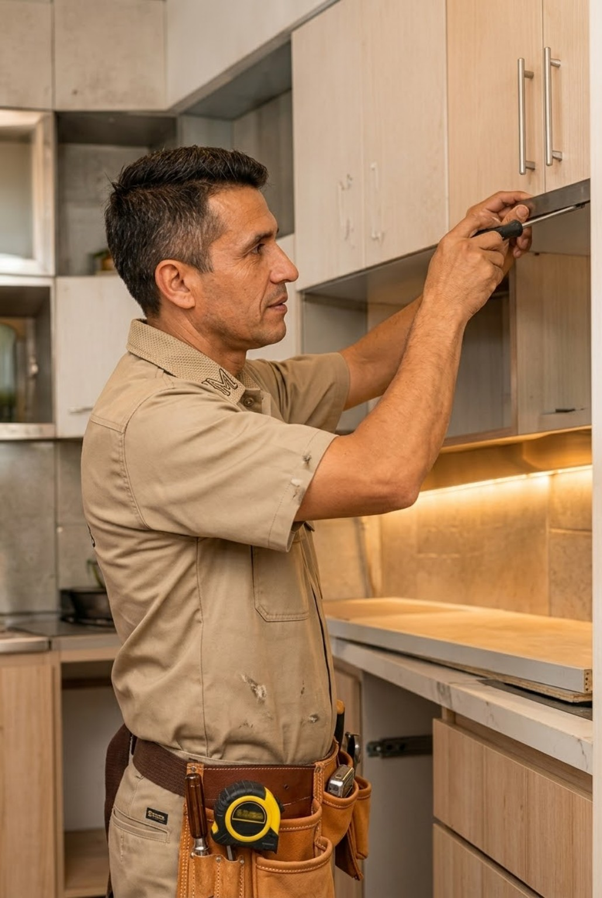

cocinas integrales
Diseño y fabrico cocinas funcionales, bien distribuidas y pensadas para tu rutina.
carpintería residencial · cali y alrededores
Soy John Morales. Diseño, fabrico e instalo cocinas integrales, closets y muebles personalizados para tu hogar. Trabajo con responsabilidad, atención al detalle y precios justos.

cada espacio tiene una forma de ser aprovechado. te escucho y preparo una solución pensada para lo que necesitas.
Diseño, fabrico e instalo muebles que aprovechan cada rincón y responden al uso diario.
Diseño y fabrico cocinas funcionales, bien distribuidas y pensadas para tu rutina.
Fabrico e instalo soluciones de organización adaptadas a tus espacios.
Creo muebles prácticos que combinan aprovechamiento y diseño.
Fabrico piezas según las medidas y necesidades de cada proyecto.
Te muestro referencias visuales de los espacios que puedo ayudarte a transformar. Las fotografías de mis trabajos se añadirán cuando estén disponibles.


fotografías de John en su entorno de trabajo.
Soy John Morales y llevo 10 años trabajando en carpintería residencial. Me enfoco en entender lo que necesitas, cuidar los acabados y entregar soluciones hechas para el espacio real de cada persona.
Converso cada proyecto contigo y preparo la cotización de acuerdo con sus medidas, materiales y alcance. La garantía y las condiciones se acuerdan según el trabajo y los materiales utilizados.
conversemos sobre tu idea ↗Cuéntame qué tienes en mente. Revisamos medidas, materiales y posibilidades para tu proyecto.
cotiza sin compromiso ↗ Te atiendo en Cali, Jamundí, Candelaria y sectores cercanos, previa coordinación.